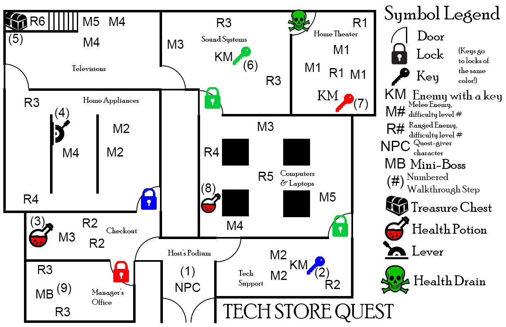
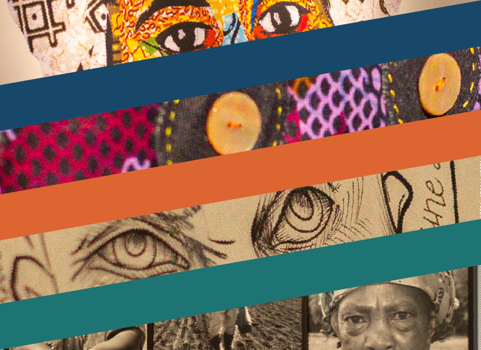
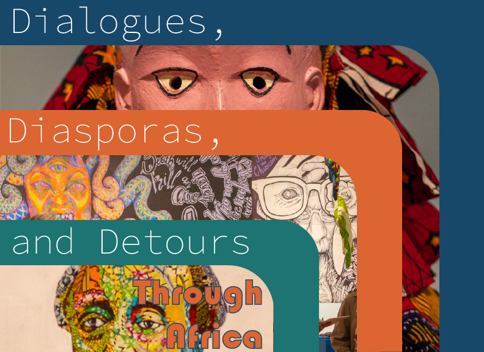
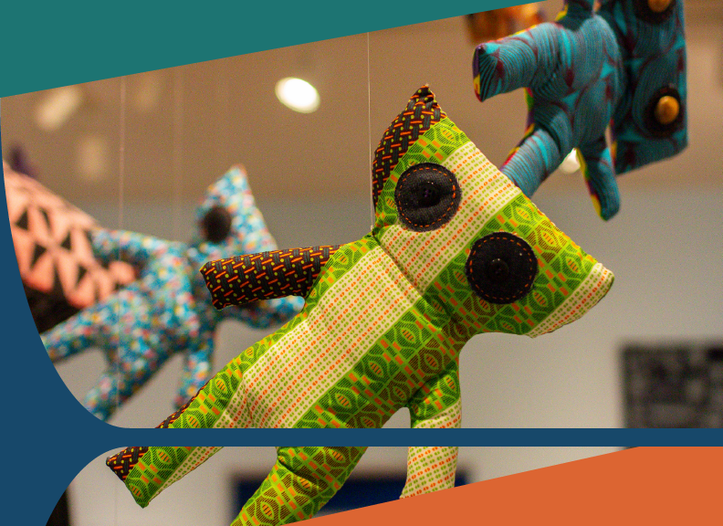
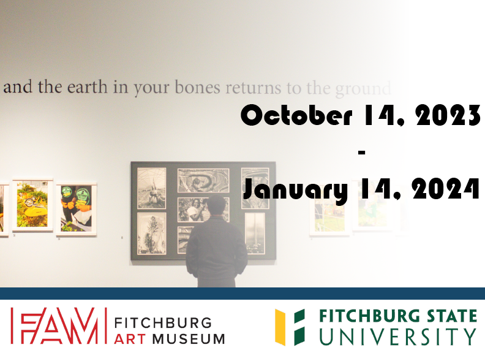

Making video games has been my dream since I was 10 years old, and I've held onto that dream for over 10 years. I took every programming course I possibly could in high school, including an independent study, and expanded my horizons further once I got to college. I've taken many other creative courses and hobbies - graphic design, web design (I made this website you're on from scratch in HTML), 2D animation, creative writing, media analysis, 3D sculpting and design, even critiquing the things I love and hate.
On this website, you'll find a compilation of projects I've undertaken and skills that I take pride in.
Game/Level Design

Graphic Design




Writing
As soon as he was able to walk out of the hospital, he dragged the motorbike to the junkyard and tore it to shreds in a fit of screaming, sobbing rage, awakening his powers from the surge of raw emotion and leaving the bike a wreck. He blamed the bike, but once it was gone, all he had to blame was himself. He considered giving up on life, but decided that would do nothing but disrespect her memory. Instead, he decided his only reason to live was to finish the journey they wanted to take, now using his powers instead of the bike. He would see every place he wanted to see with her, even if he was now seeing them alone. He owed it to her, and nothing and no one would get in the way of repaying that debt.
David doesn't want to be special. He doesn't want to be the protagonist, or the hero. He doesn't want to be attached, because now he knows that when those attachments tear, they take a piece of him with them. His powers are a reflection of his views and desires. Increased friction because he wishes he had held onto her tighter. Decreased friction to make sure nothing holds onto him ever again.